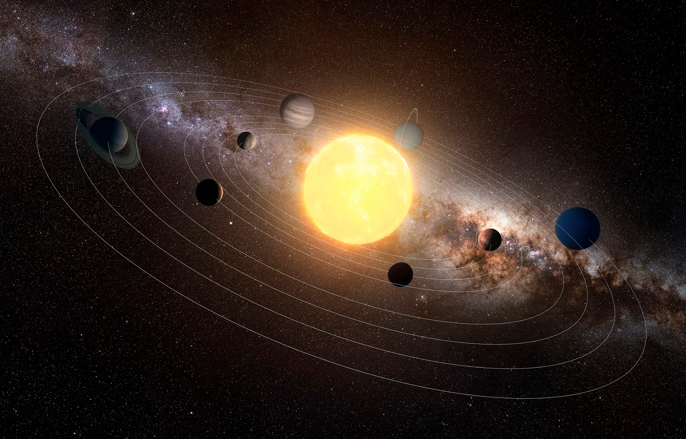

SISTEMA SOLARE
La storia del nostro sistema solare inizia circa 4,6 miliardi di anni fa, quando una vasta nube di gas e polveri, chiamata nebulosa solare, ha iniziato a contrarsi sotto l'azione della gravità. Questa contrazione ha portato alla formazione di un disco protoplanetario intorno a una giovane stella, il nostro Sole, che era appena in fase di accensione.
All'interno di questo disco, piccoli grumi di materia hanno iniziato a unirsi e a crescere, formando protopianeti che, nel corso di milioni di anni, si sono trasformati nei pianeti del sistema solare. Il più vicino al Sole, Mercurio, è un pianeta roccioso, seguito da Venere, la Terra e Marte. Questi pianeti interni sono chiamati anche pianeti terrestri per le loro caratteristiche simili alla Terra.
Oltre all'orbita di Marte si trova la fascia degli asteroidi, una vasta regione popolata da numerosi piccoli corpi rocciosi che sono resti della formazione del sistema solare. Più lontano dal Sole, si trovano i giganti gassosi: Giove, Saturno, Urano e Nettuno. Questi pianeti sono principalmente composti da gas e hanno grandi dimensioni rispetto ai pianeti terrestri.
Oltre a questi pianeti, il sistema solare include anche molti altri corpi celesti, come satelliti naturali, asteroidi, comete e corpi transnettuniani come Plutone e gli oggetti della fascia di Kuiper.
Negli ultimi secoli, l'osservazione e l'esplorazione del sistema solare hanno rivelato molte delle sue meraviglie, come le montagne su Marte, gli anelli di Saturno e le lune ghiacciate di Giove. L'evoluzione e la dinamica del sistema solare continuano a essere oggetto di studio e scoperta per gli astronomi di tutto il mondo, contribuendo a una migliore comprensione della nostra posizione nell'universo.